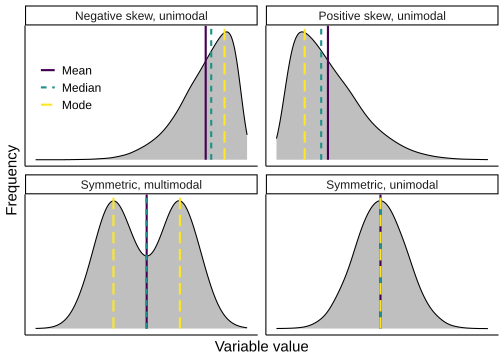
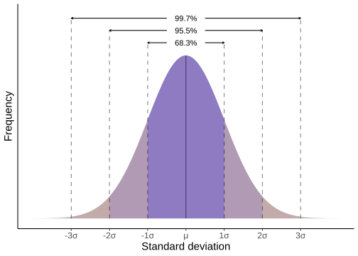
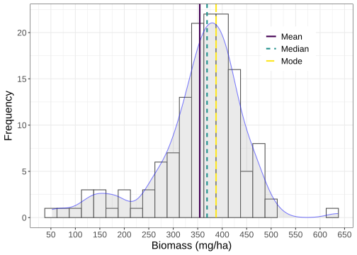
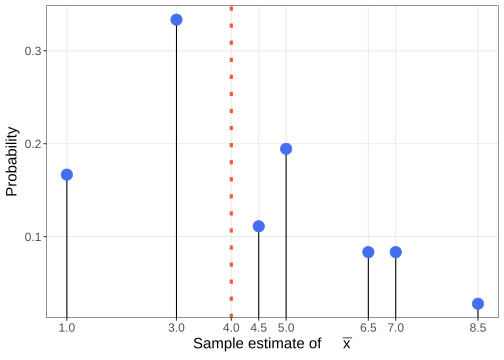
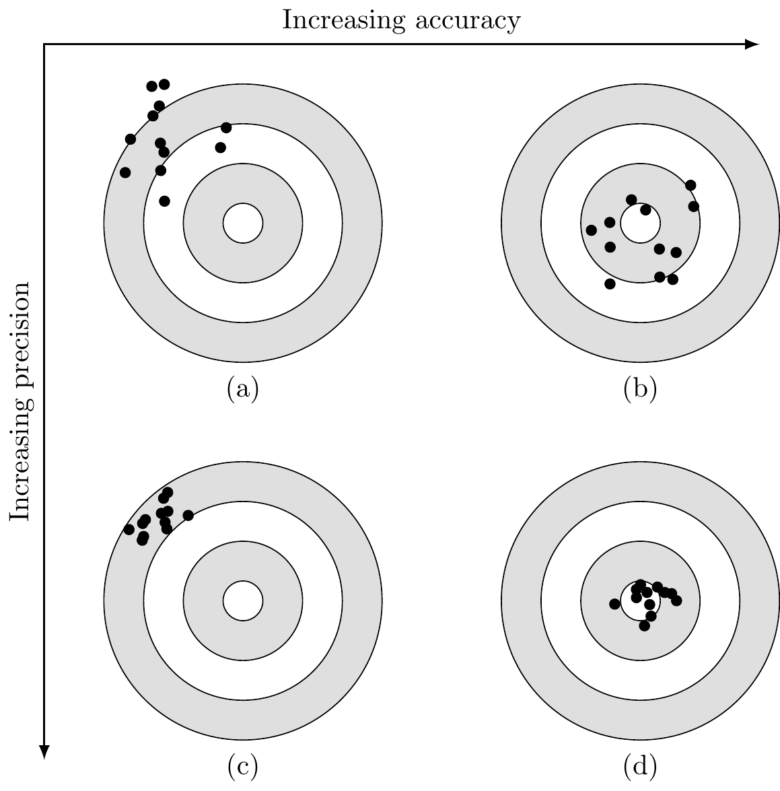
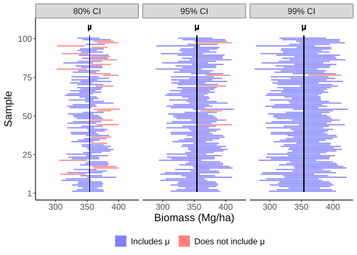
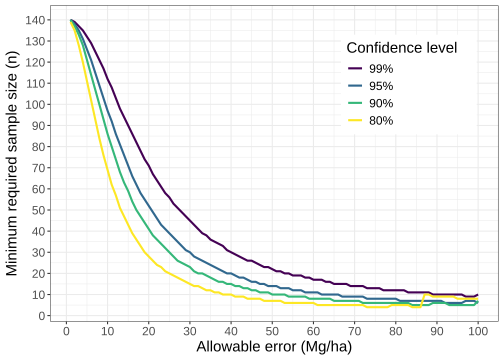

Chapter 11 Basic statistical concepts
This chapter lays out the basic statistical concepts used for making inferences about a population using sample information. We generalize and expand on these concepts to accommodate forestry applications in Chapters 12-13. As noted in Section 1.1, our focus is on an applied introduction to inferential methods using R and, as a result, we don’t develop and present the methods’ theoretical underpinnings. We provide the key concepts, equations, and considerations needed to implement code and analysis for routine forest inventory application. Here, and in subsequent chapters, we refer the reader to subject matter books on survey sampling to build a deeper understanding of the topics we touch upon. To this end, we provide a brief bibliography in Section 11.2.
11.1 Characterizing a population
As described in Section 10.1, we’re interested in characterizing a population using one or more parameters. Parameters are generally divided into two categories. Measures of central tendency summarize the central point or typical value, and include the mean, median, and mode parameters. Measures of dispersion summarize the degree to which values are distributed around a central tendency and include variance, standard deviation, and range. These parameters are defined below. Following the notation laid out in Section 10.2, Greek letters represent parameters.
11.1.1 Measures of central tendency
The population arithmetic mean is \[\begin{equation} \mu = \frac{1}{N}\sum^N_{i=1} x_i, \tag{11.1} \end{equation}\] where \(N\) is the number of units in the population and \(x_i\) is the variable value on the \(i\)-th unit.
The arithmetic mean is the most common measure of central tendency in subsequent analyses. There are other types of means such as quadratic and harmonic, used in some specific settings touched upon later in the book. Unless otherwise noted, when we refer to the “mean” or “average” we’re talking about the arithmetic mean.
The mean is generally only useful to summarize quantitative variables. However, in a few special cases, such as proportions, we do compute a mean for qualitative variables, see Section 11.1.3.
The population median is computed by first arranging the \(N\) values in ascending or descending order of magnitude. The median is the middle value in the ordered values, such that 50% of the values are less than the median and 50% of the values are greater than the median. If the \(x\) variable values are arranged by magnitude, then the median is \[\begin{equation} \eta = \left\{ \begin{array}{ll} x_{(N+1)/2} & \text{if $N$ is odd}\\[0.5em] \frac{x_{N/2}+x_{N/2+1}}{2} & \text{if $N$ is even}, \end{array} \right. \tag{11.2} \end{equation}\] where, if \(N\) is odd, the median is the value with index \((N+1)/2\) (top line in the equation), otherwise, the median is the mean of the two middle values (bottom line of the equation).
The population mode is the value(s) that occurs most frequently. Some populations have more than one mode.
11.1.2 Measures of dispersion
The population variance is a measure of dispersion with two equivalent expressions defined as \[\begin{align} \sigma^2 &= \frac{1}{N-1}\sum^N_{i=1} \left(x_i - \mu\right)^2\nonumber\\ &= \frac{1}{N-1}\left(\sum^N_{i=1}x^2_i - \frac{\left(\sum^N_{i=1}x_i\right)^2}{N}\right). \tag{11.3} \end{align}\] Some prefer the second expression because it’s easier to use in spreadsheet software. Both expressions are equally convenient to compute in R. When comparing (11.3) with the population variance defined in other references, you might notice we use \(N-1\) in the denominator while other authors use \(N\), i.e., our definition differs by a factor of \(\frac{N-1}{N}\). Like Cochran (1977), S. L. Lohr (2019), and others, we chose this definition because it simplifies presentation of some sampling concepts. The alternative definitions lead to equivalent inference.
Because variance is in squared units, its interpretation is not intuitive. For example, if \(x\) is measured in tons of forest biomass, describing tons of biomass squared is not very useful. For this reason, we typically work with or report the population standard deviation, which is the square root of the variance and is in the same measurement units as the variable being summarized. The standard deviation is defined as \[\begin{equation} \sigma = \sqrt{\sigma^2} = \sqrt{\frac{1}{N - 1}\sum^N_{i=1} \left(x_i - \mu\right)^2}. \tag{11.4} \end{equation}\]
Often we’re interested in comparing the variation between two populations. If the populations have the same mean, then their standard deviations can be compared. However, if the populations have different means then the standard deviations must first be mean standardized before comparison. The coefficient of variation (CV) is a mean standardized measure of relative variability expressed as a percent and defined as \[\begin{equation} \text{CV} = 100\frac{\sigma}{\mu}, \tag{11.5} \end{equation}\] for \(\mu\ne 0\).
The range is perhaps the simplest summary of dispersion to compute. It’s defined as the difference between the lowest and highest values in the data. If the values of \(x\) were sorted in ascending order of magnitude, the range would be \(x_N - x_1\).
11.1.3 Totals and proportions
In many forestry applications, in addition to the population mean, we’re interested in the population total, e.g., total volume, biomass, number of species, or forest area. The population total is \[\begin{equation} \tau = \sum^N_{i=1} x_i = N\mu, \tag{11.6} \end{equation}\] where \(\mu\) is defined in (11.1).
There are many instances where the population parameter of interest is a proportion. For example, we might want to know the proportion of forest on a mixed landcover property or the proportion of diseased individuals in a population. The population proportion parameter, denoted by \(\mu_\pi\), is computed using (11.1) with binary qualitative variable \(x\) taking values 0 or 1 to indicate the state of an observation. To compute a property’s forested proportion, we set \(x_i\)=1 if the \(i\)-th unit is forested and \(x_i\)=0 otherwise. Similarly, \(x_i\)=1 if the \(i\)-th individual is diseased and \(x_i\)=0 otherwise. Using this binary coding of the variable, the population proportion is \[\begin{equation} \mu_\pi = \frac{1}{N}\sum^N_{i=1}x_i \tag{11.7} \end{equation}\] and the population variance is \[\begin{align} \sigma^2_\pi &= \frac{1}{N-1}\sum^N_{i=1}(x_i - \mu_\pi)^2\nonumber \\ &= \frac{\sum^N_{i=1}x^2_i-2\mu_\pi\sum^N_{i=1}x_i+N\mu_\pi^2}{N-1}\nonumber\\ & = \frac{N}{N-1}\mu_\pi(1-\mu_\pi). \tag{11.8} \end{align}\] Notice we added a \(\pi\) subscript to \(\mu\) and \(\sigma^2\). In this case, the subscript is not used for indexing, but simply as a reminder that this mean and variance are for a population proportion.
11.1.4 Tabular and graphical representations of data distributions
Data analysis objectives commonly focus on estimating a limited number of parameters. In addition to the desired parameter estimates, a conscientious analyst includes a narrative documenting the analysis process. The narrative, written around exploratory data analysis (EDA) tables and figures, supports estimation methods, provides context for the estimates, and provides insight not conveyed by estimate values alone.
Frequency tables and associated graphs efficiently convey information about the data distribution. A frequency table organizes values into an easy to read and interpret format. A value’s frequency is the number of times it occurs. The frequency table arranges values in ascending or descending order with their corresponding frequencies. Stand tables, as introduced in Section 8.3, are frequency tables and we saw in Section 9.4 how to translate a frequency table into a graphic by placing its values along the x-axis and corresponding frequency on the y-axis. For example, a histogram uses vertical bars or lines to indicate each value’s frequency. Other graphics connect the frequencies using lines or capture the histogram’s general shape using a smooth curve. See Section 11.1.5 for examples.

FIGURE 11.1: Distribution shapes and associated measures of central tendency.
Skewness is a term used to describe a distribution’s shape, specifically its asymmetry. A positive-skewed distribution, as illustrated in Figure 11.1, has a long tail in the positive direction. Vertical lines in Figure 11.1 identify the distribution’s mean, median, and mode. The mean of a positive-skewed distribution is on the positive side of the distribution’s peak. This is because the mean is “pulled” toward the relatively few, but large, values out on the distribution’s tail. The median of a positive-skewed distribution is to the left of the mean and, unlike the mean, is not sensitive to large extreme values on the distribution’s tails. A negative-skewed distribution has a long tail in the negative direction, again illustrated in Figure 11.1. Like the positive-skewed distribution, the negative-skewed distribution mean is pulled off the peak. However, the mean in a negative-skewed distribution is pulled in the negative direction by the long tail. The median of a negative-skewed distribution is to the right of the mean. The first row in Figure 11.1 illustrates unimodal distributions with positive and negative skew. We describe these distributions as unimodal because there’s only one prominent mass of observations at and around the mode. Depending on the type of analysis we pursue, the description of a distribution’s modality (i.e., the number of peaks it contains) can deviate from the mode’s formal definition and be a qualitative description about the number of clearly defined peaks. The second row in Figure 11.1 illustrates a bimodal (two modes) and unimodal symmetric distribution. These distributions are symmetric about the mean. Notice for symmetric distributions, the mean and median are equal. Chapter 9 covers coding tools used to produce graphics like those in Figures 11.1.
The lower right distribution in Figure 11.1 illustrates the Normal distribution, also known as the Gaussian distribution. Due to its role in theoretical results used to quantify parameter estimate uncertainty, the Normal distribution is the most conspicuous probability distribution in statistics. The Normal distribution depicted in Figure 11.2 provides a bit more detail. As we’ve already seen, this distribution is unimodal and symmetric about the mean. Most data in a Normal distribution, about 68.3%, are within 1 standard deviation (i.e., -1\(\sigma\) to 1\(\sigma\)) of the mean, and about 95.5% are within 2 standard deviations (i.e., -2\(\sigma\) to 2\(\sigma\)) of the mean. The distribution’s center and dispersion are defined by its mean and standard deviation parameters, respectively.

FIGURE 11.2: Normal distribution with shaded regions representing different percents of area under the curve.
11.1.5 Illustrative analysis
Let’s connect these data representations (i.e., tables and graphics) and parameters, to an illustrative analysis of the Harvard Forest dataset introduced in Section 1.2.5. Recall this is a rare dataset in that it’s a census of all trees in the 35 ha study area.98 Figure 11.3 shows the 35 ha Harvard Forest ForestGEO plot partitioned into 140 non-overlapping square 0.25 ha units. The shape and size of these 140 units is but one way to delineate population units and selected because it serves well for this illustration. Section 12.1 covers some considerations for defining population unit shape and size.

FIGURE 11.3: Harvard Forest comprising 140 0.25 ha square population units.
Our population parameter of interest, which we’ll call \(\mu\), is the average biomass in metric tons per ha (Mg/ha). The variable recorded for each population unit, say \(x\), is the biomass Mg per 0.25 ha (this is the sum of tree biomass on each unit). It will, however, simplify life later if we record \(x\) as the biomass Mg per ha instead of biomass Mg per 0.25 ha. To do this, multiply biomass Mg per 0.25 ha unit by 4 (i.e., 1/0.25).99 Figure 11.4 shows each unit’s biomass (Mg/ha).

FIGURE 11.4: Harvard Forest biomass (Mg/ha) for each population unit.
Table 11.1 is the frequency table for the data shown in Figure 11.4. The frequency values in this table are the number of population units with biomass (Mg/ha) within the given interval. The sum of frequency values equals the number of units in the population \(N=\) 140. Notice the parentheses and square bracket notation that define the intervals in Table 11.1. A closed interval, denoted by square brackets, means the endpoints are included in the interval. For example, \([50, 150]\) in Table 11.1 is a closed interval with endpoints 50 and 150. There are 7 population units with biomass (Mg/ha) that fall within this interval. A closed interval can also be written using \(\le\) notation, e.g., \([50, 150]=\{50 \le y \le 150\}\). An open interval, denoted by parentheses, means the endpoints are not included in the interval. Following from open and closed notation, a half-open interval includes only one of its endpoints, and is denoted by one parentheses and one square bracket, e.g., there are 8 units that fall within the half-open interval \((150,250]\) or \(\{150 < x \le 250\}\).
The frequency distribution mode in Table 11.1 is the \((350, 450]\) interval, i.e., most population units have somewhere between 350 and 450 Mg/ha, and the majority of the units fall within the two middle intervals.
| [50, 150] | (150, 250] | (250, 350] | (350, 450] | (450, 550] | (550, 650] | |
|---|---|---|---|---|---|---|
| Frequency | 7 | 8 | 38 | 73 | 13 | 1 |
Figure 11.5 is a graphical representation of the frequency distribution summarized in Table 11.1. In fact, Figure 11.5 shows two different representations superimposed upon one another. The first is a histogram with rectangular bar width set to 25 Mg/ha. Except for the interval width, the histogram is a direct translation of the frequency table. Analogous to summing the frequency values in the table, the combined height of the histogram bars equals the number of population units \(N=\) 140. The second is a smoothed representation of the histogram shown as the blue curve with slight gray shading beneath. Unlike the frequency table and histogram, the area under this curve does not necessarily equal the number of units in the population. Rather, the curve is used to give a general impression of the distribution, smoothing over anomalies that might not be meaningful in the grand scheme of things.

FIGURE 11.5: Harvard Forest biomass (Mg/ha) frequency histogram for values shown in Figure 11.4.
Vertical lines in Figure 11.5 identify the distribution’s mean, median, and mode. Following from Section 11.1.4, this distribution shows a slight negative skew, with the mean to the negative side of the distribution’s peak and the median to the right of the mean. The mode, being the most frequently occurring value (or values), is clearly identified in Figure 11.5 as the tallest bar, at about 387.5 Mg/ha. This is a unimodal distribution, because there’s only one prominent mass of observations at and around the mode.
Let’s compute the population parameter values shown in Figure 11.5. The code below uses tidyverse functions to read a file containing the population unit data shown in Figure 11.4 and assigns it to the hf data frame. We then select the 140 biomass measurements and assign them to a vector called bio_mg_per_ha. Given bio_mg_per_ha, we first compute the mean following (11.1) then use R’s built-in mean() function.
hf <- read_csv("datasets/HF/HF_pop_units.csv")
bio_mg_per_ha <- hf %>% pull(bio_mg_per_ha)
# Assign the vector length to N and check that it's what we expect.
N <- length(bio_mg_per_ha)
N#> [1] 140#> [1] 352.69 380.87 314.18 340.12 382.87 384.20#> [1] 354.15#> [1] 354.15Now let’s compute the median first following (11.2) then using the median() function. The operators used to compute the median are explained in the text below the code.
# First test if the number of measurements is even or odd.
N %% 2 == 0 # No remainder, so it's even.#> [1] TRUE# Arrange the measurements in ascending order.
bio_mg_per_ha <- sort(bio_mg_per_ha)
# Given the even number of measurements, the median
# is the mean of the two middle elements.
(bio_mg_per_ha[N / 2] + bio_mg_per_ha[N / 2 + 1]) / 2#> [1] 369.05#> [1] 369.05There are a few things to notice in the code used to compute the median. The first line uses the modulus operator %% and equality operator == to test whether N is even or odd. The modulus operator returns the remainder from N / 2, i.e., the remainder of the division. We then test if the remainder is equal to zero using the == operator, which returns TRUE if the values on either side are equal and FALSE otherwise. The order of operations for these two operators is from left to right, such that N %% 2 is evaluated before the logical test.100 Next, as the name implies, the sort() function arranges the vector’s values, with a default ordering from least to greatest. Finally, following (11.1), the median is the mean of vector values at index N / 2 and N / 2 + 1.
Next, let’s compute the population’s variance using the two mathematically equivalent expressions in (11.3) then the standard deviation (11.4).
#> [1] 8340.1#> [1] 8340.1#> [1] 91.324Returning to a point made in Section 10.2.3, notice in the second line of code above that (bio_mg_per_ha - mu)^2 is a vector operation with mu being subtracted from each element in bio_mg_per_ha, then each resulting difference is squared before being summed via sum().101 Like the mean() and median() functions we saw previously, you can also use the built-in variance function var() and standard deviation sd() to compute (11.3) and (11.4), respectively.
11.2 Introduction to sampling methods
The following sections provide the basics to implement and interpret results for routine probability sampling inference. For a more complete treatment, we defer to other books that delve into application and theory. While somewhat dated, the extensive book by E. W. Johnson (2000) provides a balanced perspective of theory and application. As noted previously, Freese (1962) is clearly written and covers basic statistical concepts and analysis for common sampling designs used in forestry. Shiver and Borders (1995) and H. T. Schreuder, R., and Ramirez-Maldonado (2004) provide a modernized and expanded version of Freese (1962), with additional material on forestry methods. The entertaining and informative book by K. Iles (2003) is a fun read with a lot of wit, wisdom, and practical suggestions. Gregoire and Valentine (2007) serves as a keystone to support the span from application to rigorous theoretical treatment of forest survey sampling topics. Their book is best approached by those with a solid understanding of probability theory who desire to better understand the development and properties of various estimators. Similarly, Mandallaz (2007) provides many theoretical insights with real-world implications, along with topics in model-assisted, geostatistical, and optimal sampling schemes with applications in national forest inventory (NFI). From a purely sampling theory standpoint, Cochran (1977) and Claes-Magnus et al. (1977) are popular references among many practitioners. We particularly like S. L. Lohr (2019) who offers a well-balanced contemporary take on design and analysis. For readers interested in a full understanding of how and why probabilistic sampling methods work along with extensions to model-assisted inference, the classical books Claes-Magnus et al. (1977) and Särndal, Swensson, and Wretman (1992) are essential resources.
There are many lively discussions among experts on how to select a sample and use its information to draw conclusions about the population. Much of the literature noted above, and the majority of the material in this book, is classical design-based inference of finite populations. Design-based inference relies on the known probability of selection in sampling. A potentially richer and more flexible paradigm known as model-based inference is capable of delivering equally valid and potentially more intuitive interpretations of uncertainty quantification that we encourage the reader to explore (see, e.g., Ghosh and Meeden (1997), Ericson (1969), Little (2004), and Green, Finley, and Strawderman (2021)).
11.2.1 Characteristics of samples
In most practical cases, it’s too time consuming and/or expensive to observe all units in the population. In such cases, we settle for observing a sample, meaning subset, of the population units. If selected appropriately, this sample can provide a useful estimate of the population parameter of interest.
A fundamental assumption is information gleaned from the sample holds for the population from which it was drawn. The ideal sample is an exact scaled-down version of the population; however, in practice this is never achieved.102 Therefore our aim is to select a sample that’s representative of the population. This starts by recognizing two sources of bias to avoid. Bias, in this context, means our sample differs in a systematic way from the population. Selection bias occurs when some part of the population is not included in the sample. For example, in an effort to avoid exercise, you establish your timber cruise plots for a woodlot along the side closest to the road—effectively excluding the interior from the sample. Another example is avoiding thickets when conducting tree regeneration surveys, preferring to install sample plots only where it’s easy to walk—again potentially missing important areas of regeneration protected from deer browsing. These are examples of convenience sampling and are very common sources of selection bias.103
Measurement bias and personal bias are other common sources of bias we wish to avoid. Measurement bias occurs when an instrument provides a measurement that’s systematically different from the true value, perhaps due to damage or miscalibration. Personal bias refers to a human error that results in a measurement that’s systematically different from the true value. The classic forestry example of personal bias is when someone consistently takes tree DBH measurements at a height other than 4.5 ft (1.37 m) from the ground on the uphill side of the tree (Omule 1980; Luoma et al. 2017).
11.2.2 Probability samples
Here, we cover a set of classical techniques for drawing inference using probability sampling of a finite population. Finite means there is a limited, i.e., countable, number of units in the population. Under probability sampling, each possible sample has a known probability of selection and each population unit must have a non-zero probability of being included in a sample. As this definition suggests, two different probabilities comprise probability sampling. The sample probability is the probability of selecting a particular sample (i.e., the particular set of population units observed) and inclusion probability is the probability of including a given population unit in the sample.
Probability sampling is the preferred approach to avoid the temptations and subsequent shortcomings of convenience sampling. The probability sample guarantees that each unit in the population could appear in the sample and provides a mechanism to assess the expected quality of a statistic calculated from the sample. A statistic is a quantity computed using values in a sample and used to estimate a population parameter. Although probability sampling cannot guarantee that any given sample is representative of the population with respect to a parameter of interest, it does provide a way to quantify sampling error. Sampling error is the difference between a sample-based estimate for a population parameter and the actual, but unknown, value of the parameter.
Selection of a probability sample from a finite population requires the existence of a sampling frame. For our current purposes, the sampling frame is a list of all units in the population from which we select sample units. At this point, it’s useful to be a bit more specific about our definition of the term unit by making a distinction between an observation unit and sampling unit. The observation unit is the physical object that we actually measure. The sampling unit is a unit we select to measure from the sampling frame. To make this distinction clearer, let’s return to the example at the end of Section 10.1 where we were interested in estimating total merchantable timber volume on a 50 acre property. Here the 1/5-th acre plot is the sampling unit and the trees measured within each plot are the observation units. Unless stated otherwise, when we say unit we mean sampling unit.
11.2.3 Sampling distribution and properties of estimators
Let’s review. A statistic is a quantity computed from sample data and used to estimate a population parameter. We could consider several different statistics (i.e., computed from different algebraic expressions or, as is often referred to, rules) that might serve to estimate a particular population parameter. So, which statistics give “good” estimates? We might even ask which statistic gives the “best” estimate? Of course, these questions also force us to define “good” and “best.” In practice, we typically have one sample and hence one estimate. Because of sampling error, comparing a single estimate to the true value of the population parameter (if it were known), would tell us little about the quality of the statistic. Rather, to answer these and related questions, we introduce the idea of an estimator which is a rule for calculating an estimate from sample data.
Given a sampling frame, we draw a probability sample of size \(n\) from a population. Using these sample data, the estimator yields one estimate of the population parameter of interest. Next, say we repeat the process for computing the estimate but this time we use a different, but equally valid, probability sample of size \(n\) from the population. Because we’re using a different sample, the second estimate is quite likely different from the first estimate. By extension, using the estimator to compute an estimate for each of a large number of different samples of size \(n\) from the population, you’ll end up with an equally large number of estimates. The distribution of these estimates is the sampling distribution. The sampling distribution of a statistic is the distribution of that statistic computed from a large number of repeated samples, or all possible samples, of the same size from a population. The sampling distribution depends on characteristics of the population, the statistic computed, the sampling procedure, and sample size.
We can learn about a statistic by comparing properties of its sampling distribution with the population parameter of interest. Specifically, we can get at the questions previously stated “which statistic gives a good estimate” and “which statistic gives the best estimate,” by restating them as “which estimator gives a good estimate” and “which estimator gives the best estimate.” For a given population parameter, there are three conditions an estimator should meet to be considered “good.” The estimator must be:
- unbiased, the estimator’s expected value is equal to the parameter value (see (11.10));
- consistent, as sample size increases, estimates converge to the parameter value;
- relatively efficient, the estimator’s variance is the smallest of all estimators that could be used (see (11.11)).
As suggested by the third point, these conditions also offer criteria for defining “best” and hence a way of choosing among alternative estimators.
Let’s illustrate some probability sampling concepts using a small population where all units have known values. We’ll then propose an estimator for the population’s mean, generate its sampling distribution, see if it’s unbiased, compute its variance, and explore some of its other other qualities.
Following notation in Section 10.2, population parameters are represented using Greek letters and statistics are represented using Roman letters often decorated with a bar or hat above the letter, i.e., the symbols \(\,\bar{}\,\) and \(\,\hat{}\,\), respectively. For example, as you’ll see shortly, we use \(\mu\) and \(\bar{x}\) to symbolize the population mean parameter and its corresponding sample-based estimate, respectively.
The population has \(N=\) 9 units with the following values \[\begin{equation*} \begin{aligned}[c] x_1&=5\\ x_2&=1\\ x_3&=1\\ \end{aligned} \qquad \begin{aligned}[c] x_4&=8\\ x_5&=9\\ x_6&=1\\ \end{aligned} \qquad \begin{aligned}[c] x_7&=5\\ x_8&=1\\ x_9&=5,\\ \end{aligned} \end{equation*}\] where the subscript on variable \(x\) indexes the population unit. The population mean is \[\begin{equation} \mu = \frac{\sum^N_{i=1}x_i}{N} = \frac{5+1+1+8+9+1+5+1+5}{9} = 4. \end{equation}\]
The sampling frame comprises the population unit indexes 1 through 9. If we consider a sample size of \(n=\) 2 and select sample units without replacement (meaning a unit cannot appear more than once in a given sample, see Section 11.3) then 36 possible samples can be formed for this population.104 As we’ll see in Section 11.3, the procedure used to select these samples implies any given sample has a 1/36 probability of selection.
An estimator we could use for \(\mu\) is the sample mean \(\bar{x}=\frac{\sum^n_{i=1}x_i}{n}\). The sampling distribution of this estimator is generated by calculating \(\bar{x}\) for each of the 36 samples. For example, given the sample comprising units {1, 4}, our estimate is
\[\begin{equation}
\bar{x} = \frac{x_1 + x_4}{n} = \frac{5+8}{2} = 6.5.
\tag{11.9}
\end{equation}\]
This calculation is then repeated for the remaining 35 samples, resulting in 36 estimates. Different samples can yield the same estimate value. For example, in addition to the sample comprising units {1, 4}, used in (11.9), samples with units {4, 7} and {4, 9} also result in \(\bar{x}=6.5\).105
The estimate value frequency among the 36 estimates is given in the first row of Table 11.2 (note, the first row sums to 36). As we just saw, three samples resulted in an estimate of 6.5, which is reflected in the frequency table.
| 1 | 3 | 4.5 | 5 | 6.5 | 7 | 8.5 | |
|---|---|---|---|---|---|---|---|
| Frequency | 6 | 12 | 4 | 7 | 3 | 3 | 1 |
| Probability | \(\frac{6}{36}\) | \(\frac{12}{36}\) | \(\frac{4}{36}\) | \(\frac{7}{36}\) | \(\frac{3}{36}\) | \(\frac{3}{36}\) | \(\frac{1}{36}\) |
Next, using the frequency and knowing the probability of sample selection, i.e., 1/36, we can calculate the probability of estimate value occurrence, which is given in the second row of Table 11.2 (note, this row sums to 1). This second row is the sampling distribution for the estimate values in the first row.106 The sampling distribution histogram is plotted in Figure 11.6.107 Looking at either Table 11.2 or Figure 11.6, the sampling distribution tells us there’s a one-in-six chance (i.e., 6/36) of drawing a sample that results in \(\bar{x}=1\), a 1-in-3 chance (i.e., 12/36) of drawing a sample that results in \(\bar{x}=3\), and so on.

FIGURE 11.6: Sampling distribution of \(\bar{x}\) with the population mean \(\mu\) added as a vertical dotted line.
Given the sampling distribution, we can now assess if our estimator \(\bar{x}\) is unbiased. This starts by computing the expected value of \(\bar{x}\), denoted by \(\mu_{\bar{x}}\). The expected value of a statistic is the weighted average of its \(m\) sampling distribution values, with the probability of each value as the weight. Using the \(m=\) 7 estimate values in Table 11.2 the estimator’s expected value is \[\begin{align} \mu_{\bar{x}} &= \sum^m_{i=1} P_i\bar{x}_i\nonumber\\ &= \frac{6}{36}(1) + \frac{12}{36}(3) + \ldots + \frac{1}{36}(8.5)\nonumber\\ &= 4, \tag{11.10} \end{align}\] where \(i\) indexes the table columns, and \(P_i\) is the probability of estimating \(\bar{x}_i\). The estimation bias of \(\bar{x}\) is \[\begin{align} \text{Bias}[\bar{x}] &= \mu_{\bar{x}} - \mu\nonumber\\ &= 4 - 4\nonumber\\ &= 0. \end{align}\] When the estimation bias is zero, as is the case here, we say the estimator is unbiased. Notice unbiased does not mean the estimates are equal to the parameter \(\mu\), but rather the weighted average of the estimates equals \(\mu\). This is seen in Figure 11.6, where none of the estimates actually equal \(\mu\) (i.e., due to sampling error), but rather their weighted average (11.10) equals \(\mu\).
The variance of the sampling distribution of \(\bar{x}\) is \[\begin{align} \sigma^2_{\bar{x}} &= \sum^m_{i=1}P_i(\bar{x}_i - \mu_{\bar{x}})^2\nonumber\\ &= \frac{6}{36}(1- 4)^2 + \frac{12}{36}(3- 4)^2 + \ldots + \frac{1}{36}(8.5- 4)^2\nonumber\\ &= 3.89. \tag{11.11} \end{align}\] A small variance means the estimates are more similar in value, and large variance means the estimates have greater differences in value.
We compute an estimator’s variance for a few reasons. First, as noted previously, it’s needed when comparing among alternative estimators using relative efficiency. Second, related to relative efficiency, we often seek unbiased estimators with low variance or high precision, where precision is the inverse of the variance. Third, variance is a component of mean squared error (MSE), which is a common measure of an estimator’s accuracy. Smaller values of MSE indicate greater estimator accuracy. The MSE of the sampling distribution of \(\bar{x}\) is \[\begin{align} MSE[\bar{x}] &= \sigma^2_{\bar{x}} + \left(\text{Bias}[\bar{x}]\right)^2\nonumber\\ &= 3.89 + \left(0\right)^2\nonumber\\ &= 3.89. \tag{11.12} \end{align}\] Notice in (11.12), when the estimator is unbiased (i.e., estimation bias is zero), the MSE reduces to the estimator’s variance. For some population parameters of interest and for some sampling procedures, we find ourselves working with biased estimators. In such settings, MSE is a useful criterion for choosing among alternative estimators.
Figure 11.7 provides a bit more intuition about the different ways to describe an estimator’s characteristics. The figure illustrates various combinations of estimation bias, precision, and accuracy. Within the context of evaluating these qualities of an estimator, you can think of the dots on the targets as being estimate values in a sampling distribution. The scatter of points (i.e., distribution of points) increases in accuracy (i.e., reduction in MSE) moving from the left targets to the right targets. Similarly, scatter of points increases in precision (i.e., reduction in variance) moving from the top targets to the lower targets. If these four targets represented sampling distributions of four different estimators, then we’d select the one that produced the lower right target, as it’s the least biased and most precise.

FIGURE 11.7: Illustration of the bias, precision, and accuracy continuum. (a) Biased, imprecise, and inaccurate. (b) Unbiased, imprecise, and inaccurate. (c) Biased, precise, and inaccurate. (d) Unbiased, precise, and accurate.
As a very brief final example, let’s see how a different estimator for the population mean \(\mu\) performs relative to \(\bar{x}\). Purely for illustration, we’ll naively consider the quadratic mean as the alternative estimator. The quadratic mean is defined as \[\begin{equation} \bar{x}_Q = \sqrt{\frac{\sum^n_{i=1}x_i^2}{n}}. \tag{11.13} \end{equation}\] Using the sampling distribution for \(\bar{x}_Q\), we find the estimator is biased \(\text{Bias}[\bar{x}_Q]=\) 0.53, with variance \(\sigma^2_{\bar{x}_Q}=\) 4.38, and mean squared error \(\text{MSE}[\bar{x}_Q]=\) 4.66. Clearly, compared with \(\bar{x}_Q\), \(\bar{x}\) is the preferred estimator for \(\mu\), given it’s unbiased, has a greater relative efficiency \(\sigma^2_{\bar{x}} < \sigma^2_{\bar{x}_Q}\), and is more accurate \(\text{MSE}[\bar{x}] < \text{MSE}[\bar{x}_Q]\).
11.3 Simple Random Sampling
Simple random sampling is the most basic form of probability sampling and provides the basis for the more complex sampling designs explored in Chapter 13. Simple random sampling can be conducted with replacement or without replacement. With replacement means the same sample unit can be included more than once in the sample. Without replacement means the sample unit can be included only once in the sample, i.e., all units in the sample are distinct. The word replacement refers to the idea that we’re replacing units selected into the sample back into the population such that they could be selected again.108
11.3.1 Simple Random Sampling without replacement
In the finite population setting, we usually prefer using a simple random sample without replacement (SRS). A SRS of size \(n\) is selected so that every possible combination of \(n\) distinct units in the population has the same probability of being selected as the sample. There are \(\binom{N}{n}\) equally likely samples of size \(n\), \[\begin{equation} \binom{N}{n} = \frac{N!}{n!(N-n)!}, \tag{11.14} \end{equation}\] where \(!\) denotes the factorial expansion such that \(n! = n\cdot(n-1)\cdot(n-2)\cdot(n-3)\cdot \ldots \cdot 3\cdot 2\cdot 1\). So the probability of selecting any given sample of \(n\) units is \[\begin{equation} \frac{n!(N-n)!}{N!}, \end{equation}\] and the probability that any given unit appears in the sample is \(n/N\).
As we’ll illustrate in Section 11.3.5, given a sampling frame that indexes the \(N\) population units, a set of \(n\) random integers selected from 1 to \(N\) are typically used to identify sample units. To estimate the population mean \(\mu\) (11.1) using SRS, we use the sample mean defined as \[\begin{equation} \bar{x} = \frac{\sum^n_{i=1} x_i}{n}. \tag{11.15} \end{equation}\] We explored some properties of this estimator for \(\mu\) in Section 11.2.3 and showed that, for one small example population, it’s unbiased and has other desirable qualities. A more general result by Cornfield (1944) shows that for any finite population, \(\bar{x}\) is an unbiased estimator for \(\mu\).
Recall from Section 11.2.3, the variance of \(\bar{x}\) is computed using (11.11) and measures the variability among estimates of \(\mu\) computed from different samples. Under SRS this variance is reexpressed in terms of the population variance \(\sigma^2\), given in (11.3), as \[\begin{equation} \sigma^2_{\bar{x}} = \left(1-\frac{n}{N}\right)\frac{\sigma^2}{n}, \tag{11.16} \end{equation}\] which will prove useful very shortly.
The \(1 - \frac{n}{N}\) term in (11.16) is called the finite population correction (FPC) factor. Its role is to reduce the variance of \(\bar{x}\) as the sampling fraction \(n/N\) increases.
In estimation problems, we’re almost always looking for ways to reduce \(\sigma^2_{\bar{x}}\) (or, equivalently in practice, ways to reduce its estimate given in (11.18)). Intuitively, under SRS, as our sample size \(n\) increases, we learn more about the population and, hence, there should be less variability among our estimates. The extreme is when \(n\) equals \(N\) at which point there’s no sampling variability because the only eligible sample is the entire population and the FPC ensures \(\sigma^2_{\bar{x}}\) appropriately equals zero.
In most forestry applications, the population is large. In such settings, \(\sigma^2_{\bar{x}}\) is reduced more by the sample size \(n\) in the denominator of the second term in (11.16) than the sampling fraction. In general, if the sampling fraction, expressed as a percent, is less than 2% (i.e., we sample 2% of the population), the FPC has little impact and can be dropped from (11.16) and subsequent equations to simplify life (Cochran 1977).
In practice, we don’t know the population variance \(\sigma^2\) used in \(\sigma^2_{\bar{x}}\) (11.16); rather, we estimate it using the sample variance defined as \[\begin{equation} s^2 = \frac{1}{n-1}\sum^n_{i=1}\left(x_i - \bar{x}\right)^2. \tag{11.17} \end{equation}\] Then, given \(s^2\), the unbiased estimator for \(\sigma^2_{\bar{x}}\) is \[\begin{equation} s^2_{\bar{x}} = \left(1-\frac{n}{N}\right)\frac{s^2}{n}, \tag{11.18} \end{equation}\] where, notice, this is the same expression as (11.16) except \(s^2\) is substituted for \(\sigma^2\). As was the case for \(\bar{x}\) and \(\mu\), it can be shown that \(s^2\) and \(s^2_{\bar{x}}\) are unbiased estimators for \(\sigma^2\) and \(\sigma^2_{\bar{x}}\), respectively (Cornfield 1944).
The population standard deviation \(\sigma\) is estimated using the sample standard deviation defined as \[\begin{equation} s = \sqrt{s^2}. \tag{11.19} \end{equation}\]
Following from (11.18), we estimate the standard deviation of \(\bar{x}\) as \[\begin{equation} s_{\bar{x}} = \sqrt{s^2_{\bar{x}}} = \sqrt{\left(1-\frac{n}{N}\right)\frac{s^2}{n}}. \tag{11.20} \end{equation}\] This statistic is so special and used so often that it has its own name; it’s called the standard error of the mean. Given one sample from the population, the standard error of the mean is our best estimate for the standard deviation of \(\bar{x}\)’s sampling distribution and, as we’ll see in Section 11.3.4, is key to quantifying uncertainty for the estimated population mean and other parameters of interest.
If we decide the FPC is not needed (because our sampling fraction is small), then the estimate for the standard error of the mean (11.20) simplifies to \[\begin{equation} s_{\bar{x}} = \sqrt{\frac{s^2}{n}} = \frac{s}{\sqrt{n}}. \tag{11.21} \end{equation}\]
11.3.2 Simple Random Sampling with replacement
A simple random sample with replacement (SRSWR) of size \(n\) from a population of \(N\) units is seen as selecting \(n\) independent samples of size 1. Here, independent means that the selection of any given unit does not change the probability that any unit is selected. To generate a SRSWR of size \(n\), one unit is randomly selected from the population with probability \(1/N\) representing the first sample unit. Then the sample unit is returned to the population (i.e., replaced), and the second unit is selected with probability \(1/N\), then the unit is returned to the population. This process repeats until \(n\) units are selected into the sample. Note this sample may include the same sample unit multiple times.
When sampling units are selected using SRSWR the population mean is estimated using \(\bar{x}\) (11.15) and population variance is estimated using \(s^2\) (11.17). Due to the replacement, even if our sample size equals the population size, there is no guarantee (in fact it’s highly unlikely) that all population units will be observed; hence, there is no notion of a FPC when estimating the standard error of the mean. The standard error of the mean \(s_{\bar{x}}\) under SRSWR is computed using (11.21).
When the sampling fraction is large (i.e., greater than 2% as noted previously), the SRS standard error of the mean estimator (11.20) is more efficient than the SRSWR estimator (11.21). Recall from Section 11.2.3, when comparing two estimators, greater relative efficiency equates to smaller variance among population parameter estimates. In the case of SRS versus SRSWR, the reduction in the sampling distribution variance is due to the FPC term. When the FPC sampling fraction is small, there is negligible difference in efficiency between these two sampling approaches.
11.3.3 Estimating totals and proportions
Given the sample mean (11.15), an unbiased estimator of the population total \(\tau\) (11.6) is \[\begin{equation} \hat{t} = N\bar{x}. \tag{11.22} \end{equation}\]
Following from (11.16), the total’s sampling distribution variance is \[\begin{equation} \sigma^2_{\hat{t}} = N^2 \sigma^2_{\bar{x}}. \tag{11.23} \end{equation}\] The unbiased estimator for \(\sigma^2_{\hat{t}}\) is \[\begin{equation} s^2_{\hat{t}} = N^2 s^2_{\bar{x}}, \tag{11.24} \end{equation}\] and its standard error is \[\begin{equation} s_{\hat{t}} = \sqrt{N^2 s^2_{\bar{x}}} = Ns_{\bar{x}}, \tag{11.25} \end{equation}\] where, depending on the size of the sampling fraction, or the sampling method SRS versus SRSWR, \(s_{\bar{x}}\) is either (11.20) or (11.21).
The development of estimators for means, totals, and their associated dispersion focused on quantitative variables in the preceding sections. In many cases, however, we want to make inferences about qualitative variable parameters such as proportions. Given a sample of size \(n\) the unbiased estimator for the population proportion parameter \(\mu_\pi\) (11.7) is \[\begin{equation} \hat{p} = \frac{\sum^n_{i=1}x_i}{n}, \tag{11.26} \end{equation}\] where, recall, \(x\) is a binary variable.
Uncertainty quantification for \(\hat{p}\) proceeds from its sampling distribution. Substituting \(\sigma^2\) in (11.16) with \(\sigma^2_\pi\) (11.8) and doing some simplification result in \(\hat{p}\)’s variance \[\begin{equation} \sigma^2_{\hat{p}} = \left(\frac{N-n}{N-1}\right)\frac{\pi(1-\pi)}{n}. \tag{11.27} \end{equation}\]
Again, in practice, we need to estimate \(\sigma^2_{\hat{p}}\) which begins with estimating the sample variance as
\[\begin{equation}
s^2 = \frac{1}{n-1}\sum^n_{i=1} (x_i - \hat{p})^2 = \frac{n}{n-1}\hat{p}(1-\hat{p}).
\tag{11.28}
\end{equation}\]
Then, substituting the sample variance \(s^2\) in (11.16) with (11.28) and doing some simplification results in the estimate of the variance of \(\hat{p}\)
\[\begin{equation}
s^2_{\hat{p}} = \left(1 - \frac{n}{N}\right) \frac{\hat{p}\left(1 - \hat{p}\right)}{n-1}
\end{equation}\]
and estimate of the standard error of \(\hat{p}\)
\[\begin{equation}
s_{\hat{p}} = \sqrt{\left(1 - \frac{n}{N}\right) \frac{\hat{p}\left(1 - \hat{p}\right)}{n-1}}.
\tag{11.29}
\end{equation}\]
Again, the FPC can be dropped from (11.29) if it’s not warranted or appropriate.
11.3.4 Confidence intervals
Consider the quote from Frank Freese in his introduction to statistical methods in forestry
We have it on good authority that “you can fool all of the people some of the time.” The oldest and simplest device for misleading folks is the barefaced lie. A method that is nearly as effective and far more subtle is to report a sample estimate without any indication of its reliability.
— Freese (1967)
In other words, we should accompany each estimate with a reliability statement that answers the question, “How confident are you in the estimate?” Ideally, the statement offers a value range around the estimate and probability the range includes the parameter being estimated. This range is called a confidence interval. A confidence interval is determined by an upper and lower value, referred to as the confidence limits. We incorporate probability by defining intervals with specific confidence levels. A confidence level is typically defined as \(1 - \alpha\), where \(\alpha\) is referred to as a significance level.109 A confidence interval with a confidence level of \(1 - \alpha\) is referred to as a \(100(1 - \alpha)\%\) confidence interval. For example, a 95% confidence interval has a confidence level of 0.95 (\(\alpha\) = 0.05).
Three ingredients (1) an estimate of the population parameter, (2) the standard error of the estimate, and (3) a \(t\) value, are combined to form a confidence interval, generically written as \[\begin{equation} \text{Estimate} \pm t_{\text{df}, 1 - \frac{\alpha}{2}}(\text{Standard Error}), \tag{11.30} \end{equation}\] where \(\pm\) is the plus and minus symbol, and the \(t\) value is determined by degrees of freedom (df) and \(1 - \frac{\alpha}{2}\). The product of the \(t\) value and standard error, to the right of the \(\pm\) in (11.30), is called the margin of error (or confidence interval half-width).
Say we want to estimate the population mean \(\mu\) using a sample collected under SRS. We’ve already seen the sample mean \(\bar{x}\) (11.15) is an unbiased estimate of \(\mu\). Further, we learned how to compute the standard error of the mean \(s_{\bar{x}}\) (11.20). The third ingredient, the value \(t_{\text{df}, 1 - \frac{\alpha}{2}}\), comes from a \(t\) distribution and allows us to associate a given confidence level with our confidence interval. The \(t\) value depends on the confidence level (\(1 - \alpha\)) through the term (\(1 - \frac{\alpha}{2}\)) as well as the sample size \(n\) through the term \(\text{df} = n - 1\). The qt() function in R returns the \(t\) value for a given \(\alpha\) and sample size \(n\). Using these three ingredients, a confidence interval for a population’s mean is
\[\begin{equation}
\bar{x} \pm t_{n - 1, 1 - \frac{\alpha}{2}} s_{\bar{x}}.
\tag{11.31}
\end{equation}\]
For a given standard error \(s_{\bar{x}}\), decreasing \(\alpha\) increases the confidence interval width. For example, a 99% confidence interval (\(\alpha = 0.01\)) is wider than a 80% confidence interval (\(\alpha = 0.2\)). Changing \(\alpha\) does not change the precision of the estimate, only our level of confidence that the interval covers the parameter being estimated. See Figure 11.9 in Section 11.3.5 for illustration.
While we focus primarily on estimating the mean, we can generate confidence intervals for any population parameter of interest. The confidence intervals always take the form described in (11.30). For example, if we’re interested in the population total \(\tau\), our confidence interval is \[\begin{equation} \hat{t} \pm t_{n - 1, 1 - \frac{\alpha}{2}} s_{\hat{t}}, \tag{11.32} \end{equation}\] where \(\hat{t}\) and \(s_{\hat{t}}\) are defined in (11.22) and (11.25), respectively.
Confidence interval interpretation
Say we’re interested in estimating the average depth of the duff layer in a forest stand with its 95% confidence interval. The duff is the organic material layer between the uppermost soil mineral horizon and the litter layer. A SRS of \(n\)=20 soil cores yielded a sample mean \(\bar{x}\)= 5 (in) and standard error of the mean \(s_{\bar{x}}\)= 0.5 (in). To construct a 95% confidence interval, the corresponding \(t\) value is found using the code below.
#> [1] 2.093Then, following (11.31), the confidence interval is \[\begin{align*} &5 \pm 2.093 (0.5) \end{align*}\] or (5-1.05 , 5+1.05 ) = (3.95 , 6.05) (in).
The key to interpreting a confidence interval is to recognize the confidence level is the percent of intervals—where each interval is computed using a different sample from the population—that include the population parameter being estimated. Said differently, for a 90% confidence level, if we collected a large number of different samples of size \(n\) from the population, then we’d expect 90% of the intervals computed from the samples to contain (cover or include) the parameter value being estimated.
Continuing with the duff layer example, it’s correct to state “we’re 95% confident the interval (3.95 , 6.05) (in) contains the average duff depth.” It’s not correct to state “there is a 95% probability, or chance, the average duff depth is between (3.95 , 6.05) (in).”
The distinction between these statements is subtle but important. The correct statement references a level of confidence that the interval contains the true average duff depth. The incorrect statement suggests the interval has a probability of including the average duff depth. A single confidence interval (which is typically all we’re able to compute because we only have one sample) either includes or does not include the population parameter, there is no probability of inclusion. There is, however, a probability that a portion of confidence intervals, computed from repeated sampling, contain the population parameter. This idea is demonstrated in Section 11.3.5.
Conditions for confidence intervals
For a confidence interval to accurately capture the given confidence level, three conditions must be met.
- Randomness: the population units are selected into the sample using a probability sampling method, e.g., SRS or SRSWR.
- Normality: the estimator’s sampling distribution is approximately normal, see, e.g., Section 11.2. Because we typically have one sample from the population, we cannot construct the sampling distribution to test this condition. Rather we rely on theoretical results and sample data EDA. Three cases result in an approximately normal sampling distribution.
- The condition is met, if the population from which we draw the sample is normally distributed. In practice, however, we usually don’t know the population’s distribution.
- The condition is met, if the sample size is sufficiently large. A theoretical result from the Central Limit Theorem states that regardless of the population’s distribution, the sampling distribution will be approximately normal if the sample size is sufficiently large. What is “sufficiently large” depends on the degree to which the population’s distribution deviates from a normal distribution—the greater the deviation from normal (e.g., multiple modes and not symmetric), the larger the sample size needed to ensure a normally distributed sampling distribution. For an approximately normal population distribution, some results show that a sample size \(n\) of 25 or 30 is sufficient, see, e.g. Hogg, Tanis, and Zimmerman (2015).
- The condition might be met even if our sample is small (e.g., \(n \le\) 30), but we can ensure the population’s distribution is unimodal, symmetric, continuous, and does not have outliers. An outlier is an observation that lies an abnormal distance from other values in the distribution. While we’re unlikely to observe the population, we might try and infer its shape and the presence of outliers from the sample. If the sample data are approximately symmetric and don’t have outliers, then we might assume the population’s distribution is approximately normal. However, this assumption and associated EDA results should be clearly stated when reporting the confidence interval.
- Independence: the sampling units are selected independent of one another. Under SRS, sampling units aren’t independent because selecting a unit into the sample changes the selection probability of non-selected units (i.e., the first unit selected into the sample has selection probability 1/N, the sample has selection probability 1/(N-1), and so on). However, if the sampling fraction is less than ~10%, we can assume the independence condition is met. In most forest inventories the sampling fraction is substantially smaller than ~10%.
If these three conditions are met, the resulting confidence interval should be accurate and conclusions reliable.
Estimate precision
The question arises, “how do we increase the precision of our estimate?” Or, equivalently, for a fixed confidence level, “how do we narrow the confidence interval?” To answer these questions, consider again the standard error of the mean formula (11.21), ignoring the FPC for now. Notice the standard error is positively related to \(s^2\) (the sample variance) and inversely related to the sample size \(n\). The sample variance is for the most part out of our control, it’s a characteristic of the population. However, the sample size \(n\), is completely within our control. Thus, to increase the precision of our estimate, increase the sample size. A larger sample results in a smaller standard error and, hence, a narrower confidence interval. Of course, there is no free lunch; increasing the sample size typically requires more time, money, and resources. We’ll explore how to determine the specific sample size necessary for a given level of precision in Section 11.3.6.
11.3.5 Illustrative analysis
Continuing with the Harvard Forest analysis, let’s use a SRS of size \(n=\) 30 to estimate a few of the population parameters computed in Section 11.1.5. In particular, we’re interested in estimating average biomass (Mg/ha), \(\mu\), and the total biomass, \(\tau\), along with their associated confidence intervals.
Given the \(N=\) 140 population units delineated in Figure 11.4, (11.14) tells us the number of distinct samples of size 30 that could be drawn is \[\begin{equation} \frac{140!}{30!(140-30)!} \end{equation}\] or
# Recall, bio_mg_per_ha was previously extracted from the
# Harvard Forest dataset and is a vector of biomass (Mg/ha)
# measured on all population units.
N <- length(bio_mg_per_ha)
n <- 30
factorial(N) / (factorial(n) * factorial(N - n)) # Or using choose(N, n).#> [1] 3195451784096803839625217966080which is an astonishingly large number! Importantly, following the discussion in Sections 11.2.3 and 11.3.4, each distinct sample could yield a different, but equally valid, estimate and associated confidence interval for the parameter of interest.
Let’s draw one of the possible samples. Selecting the sample begins with the sampling frame, which is just a list of all population units from which we select sample units. Here, the sampling frame consists of a vector of integers from 1 to 140 that index the population units and is illustrated in Figure 11.3. Our task is to select \(n\) indexes at random and without replacement from this sampling frame. This is accomplished in the code below using the sample.int() function that returns \(n\) integers from 1 to \(N\). When consulting the sample.int() manual page, notice the TRUE or FALSE value passed to the function argument replace determines if selection is SRSWR (with replacement) or SRS (without replacement), respectively. The R function argument names don’t match our notation, so you’ll need to do a bit of cross-walking, i.e., the argument named n is our population size \(N\) and the argument name size is our sample size \(n\). The vector of integers returned from sample.int() is assigned to sample_index that we’ll use to select those population units with corresponding integer indexes into the sample.
set.seed(seed = 1) # Sets the seed for the RNG in sample.int.
sample_index <- sample.int(n = N, size = n, replace = FALSE)
sample_index#> [1] 68 129 43 14 51 85 21 106 74 7 73 79
#> [13] 135 37 105 89 110 101 127 34 133 125 44 139
#> [25] 33 84 35 70 132 42There are a few things to notice in the code above. sample.int() uses a random number generator (RNG), which, as the name suggests, generates random integers within the range of values we prescribe. Just for fun, run sample.int(n = 140, size = 30, replace = FALSE) a few times on your console. You’ll see that each time the function is called it returns a different series of random integers. set.seed() sets the RNG’s state, i.e., seed, used to generate the sequence of random numbers. Setting the RNG’s seed via set.seed(seed = 1) before calling sample.int(), or other RNGs we’ll work with, ensures that you get the same result each time you run sample.int(). This is important when we wish to reproduce analyses or research results that rely on RNGs. The integer value of the seed argument is arbitrary, the important thing is to run set.seed() with the same seed value before running the RNG function if you wish to reproduce your results.
Using sampling unit indexes in sample_index, we create a new vector called bio_mg_per_ha_n30 containing the biomass measured on the sampling units. This is our observed vector \(x\) used to compute the subsequent estimates.
Figure 11.8 shows the 30 sampling units selected via sample.int() and their associated biomass values stored in bio_mg_per_ha_n30.

FIGURE 11.8: Harvard Forest biomass (Mg/ha) sampling units selected using Simple Random Sampling without replacement.
Let’s start by estimating the population mean \(\mu\) using the sample mean (11.15) and assigning it to x_bar.
#> [1] 351.74This estimate looks very close to the true population value of \(\mu=\) 354.15 (Mg/ha). However, as noted in Section 11.3.4, we should provide a statement of uncertainty for the estimate. In this case, the uncertainty is quantified using a confidence interval with a meaningful confidence level.
Let’s provide a 95% confidence interval for the estimate of the mean. From Section 11.3.4, recall the three key ingredients are (1) an estimate of the population parameter, (2) the standard error of the estimate, and (3) a \(t\) value. We have the first ingredient, x_bar. The standard error of the estimate, which is our second ingredient, starts with computing sample variance \(s^2\) defined in (11.19).
The standard error of the mean is then computed using (11.20) and called s_x_bar in the code below.
The final ingredient is the \(t\) value which comes from the qt() function given a probability of \(1-\frac{\alpha}{2}\) and degrees of freedom \(n-1\).
Given these three ingredients, the code below follows (11.31) to compute the margin of error and resulting lower and upper confidence limits.
x_bar_mar_err <- t * s_x_bar # Margin of error.
x_bar_lower_cl <- x_bar - x_bar_mar_err # Lower limit.
x_bar_upper_cl <- x_bar + x_bar_mar_err # Upper limit.
round(x_bar_mar_err, 2)#> [1] 39.19#> [1] 312.55#> [1] 390.93There are several ways to write our estimate with associated uncertainty in a report or scientific paper. Here are a few example statements:
- We estimate 351.74 Mg/ha of biomass with a 95% margin of error \(\pm\) 39.19.
- We estimate 351.74 Mg/ha biomass with a 95% confidence interval from 312.55 to 390.93.
- Biomass (Mg/ha) was estimated to be 351.74 (312.55, 390.93), with a 95% confidence interval in parentheses.
Because we know the population mean for these data, we can see our sample is one of the approximately 95% of possible samples that yield a confidence interval containing \(\mu\), i.e., \(\mu=\) 354.15 is between the lower limit 312.55 and upper limit 390.93.
Given we’ve already computed \(\bar{x}\) and associated standard error \(s_{\bar{x}}\), we’re well on our way to a total biomass estimate (11.22), its standard error (11.25), and 95% confidence interval. These quantities are computed in the code below. Just for fun, the last line of code uses the paste0() function to make a character string that includes the estimate and 95% confidence interval. As the name suggests, the paste0() function pastes together comma separated numeric or character objects and returns the resulting character string.110
A_ha <- N / 4 # Forest area in ha (i.e., 35 ha).
t_hat <- A_ha * x_bar # Estimate of the total.
s_t_hat <- A_ha * s_x_bar # Standard error of the total estimate.
t_hat_mar_err <- t * s_t_hat # Margin of error, using previous t value.
t_hat_lower_cl <- t_hat - t_hat_mar_err # Lower limit.
t_hat_upper_cl <- t_hat + t_hat_mar_err # Upper limit.
paste0(round(t_hat, 2), " (", round(t_hat_lower_cl, 2), ", ",
round(t_hat_upper_cl, 2), ") (Mg/ha)")#> [1] "12310.93 (10939.15, 13682.7) (Mg/ha)"## Or equivalently.
paste0(round(A_ha * x_bar, 2), " (", round(A_ha * x_bar_lower_cl, 2),
", ", round(A_ha * x_bar_upper_cl, 2), ") (Mg/ha)")#> [1] "12310.93 (10939.15, 13682.7) (Mg/ha)"In the code above, the total biomass estimate t_hat and associated standard error s_t_hat are computed by scaling x_bar (Mg/ha) and s_x_bar (Mg/ha) by the forest area A_ha.111
Let’s step through the use of A_ha in this code. Recall the \(N\) population units are each 0.25 ha. However, recall back in Section 11.1.5, we scaled biomass observation on all units by 4 so that \(\bar{x}\) and \(s_{\bar{x}}\) were expressed on the desired per ha basis, i.e., Mg/ha. This change in area basis means we can’t simply scale \(\bar{x}\) (Mg/ha) and \(s_{\bar{x}}\) (Mg/ha) by \(N\) to get the total \(\hat{t}\) and standard error \(s_{\hat{t}}\), as directed by (11.22) and (11.25). Rather, so that units of \(\bar{x}\) and \(s_{\bar{x}}\) cancel out correctly when computing the total (Mg), we scale \(\bar{x}\) and \(s_{\bar{x}}\) by A_ha the total area in ha. It’s important to keep track of units. There’s an implicit assumption in (11.22) and (11.25) that units of \(N\) match the units of \(\bar{x}\) and \(s_{\bar{x}}\).
Next, let’s reinforce a few key points about confidence intervals using an illustration. Figure 11.9 shows biomass confidence intervals estimated using 100 different samples of size \(n=30\) drawn using SRS from the Harvard Forest population. For each sample, we computed an 80%, 95%, and 99% confidence interval. The 100 resulting intervals, for each confidence level, are drawn as horizontal lines in Figure 11.9 and colored blue if they cover the population biomass value \(\mu =\) 354.15 (represented as the vertical line) and red otherwise. The empirical (meaning observed) interval coverage is 78%, 95%, and 99%, for the 80%, 95%, and 99% confidence intervals, respectively. Recall, the desired confidence level is only theoretically achieved when an exceptionally large number of samples is considered, and the population and samples meet the conditions laid out in Section 11.3.4. Therefore, the empirical results based on 100 samples might not match exactly their respective confidence levels.

FIGURE 11.9: Harvard Forest biomass (Mg/ha) confidence intervals from 100 samples of size 30 selected using Simple Random Sampling without replacement.
In Figure 11.9, notice for any given sample, the trend in interval width moving from the 80%, 95%, to 99% confidence level—as the confidence level increases, so too does the interval width. This trend is not because an estimate’s precision is increasing (its precision stays the same regardless of confidence level), rather, wider intervals are needed to ensure the desired level of coverage. Each sample has the same precision as estimated by the standard error of the mean \(s_{\bar{x}}\). For all practical purposes, the only way to increase an estimate’s precision is to increase the sample size \(n\), which in turn decreases the standard error of the mean.
11.3.6 Sample size
We start our sample size discussion with another insightful quote from Frank Freese.
Samples cost money. So do errors. The aim in planning a survey should be to take enough observations to obtain the desired precision—no more, no less.
— Freese (1967)
In other words, when designing a sampling effort, our desired precision should determine the number of samples to collect. This requires forethought about how precise an estimate needs to be to meet survey objectives. For example, do we need an estimate to be within \(\pm\) 5 tons of biomass per acre of the true value, or is an estimate of \(\pm\) 10 tons sufficient? As we’ll see, the difference between the number of samples needed to achieve a precision of \(\pm\) 5 versus \(\pm\) 10 tons per acre could be large, so we should be sure the additional effort and expense is warranted.
An approach to determine sample size comes directly from the notions developed in Section 11.3.4 for confidence intervals. Recall, the product of the \(t\) value and standard error, to the right of \(\pm\) in (11.30), is the margin of error. Notice how (11.30) reads like the biomass example in the preceding paragraph, where we have an estimate \(\pm\) a possible error of 5 tons per acre.
To compute a sample size, we choose the value to the right of the \(\pm\) and call it the allowable error. As developed below, in addition to specifying the allowable error, we must set the probability of meeting the allowable error. Similar to constructing confidence intervals, this probability is expressed as a confidence level. Therefore, if our survey objectives require biomass per acre be within \(\pm\) 5 tons of the true value with high confidence, we state the sample size problem as: what is the minimum number of samples needed to achieve an allowable error of \(\pm\) 5 tons with a 99% confidence level?
The confidence level interpretation follows from the confidence interval. For example, say we find the sample size \(n\) needed to meet some specified allowable error at a confidence level 90%. If we were able to collect a large number of different samples each of size \(n\), then we’d expect 90% of the estimates computed from the samples to be within the desired allowable error of the parameter value.
To reduce clutter, we’ll suspend using the subscript notation associated with the \(t\) value, but remember that it has \(n-1\) degrees of freedom and confidence level 1-\(\alpha\). Consider again the margin of error introduced in Section 11.3.4. Following (11.30) and using \(s_{\bar{x}}\) that includes the FPC (11.20), the margin of error for the population mean is \[\begin{align} E &= t s_{\bar{x}} \nonumber\\ &= t \sqrt{\left(1-\frac{n}{N}\right)\frac{s^2}{n}}. \tag{11.33} \end{align}\] For the sample size calculation, \(E\) is the allowable error that we set based on survey objectives. Solving (11.33) for the sample size \(n\) gives us \[\begin{equation} n = \frac{t^2s^2N}{\left(E^2N+t^2s^2\right)}. \tag{11.34} \end{equation}\] Below we define each term in (11.34) within the context of estimating sample size:
- \(n\) is the minimum sample size required to estimate the population mean \(\mu\) to within \(\pm E\) for a specified confidence level.
- \(t\) is the same \(t\) value encountered before that requires a confidence level (\(1 - \alpha\)) and the degrees of freedom (\(n - 1\)). Notice, there’s a circularity issue here, \(n\) appears on left and right of the equals sign. We’ll introduce an algorithm to calculate \(n\) despite this issue.
- \(s^2\) is the sample variance. Because we’ve not taken the sample, this must come from somewhere else, e.g., a small pilot study or from prior experience working with a similar population.
- \(E\) is the allowable error which is the amount of error we can tolerate in the estimate computed using the resulting sample. Note that \(E\) is in the measurement units of the estimate.
Using this notation, we can say with probability (\(1-\alpha\)) the absolute value of the difference between an estimate \(\bar{x}\) based on \(n\) samples and the true parameter value \(\mu\) is less than or equal to \(E\) with probability (1-\(\alpha\)).112
If we’re in a setting where it’s appropriate to ignore the FPC factor, then the sample size calculation simplifies to \[\begin{equation} n = \frac{s^2t^2}{E^2}. \tag{11.35} \end{equation}\]
Thus, given an estimate of the variance \(s^2\), allowable error \(E\), and confidence level (i.e., 1-\(\alpha\)), we can estimate the minimum sample size \(n\). The only hitch is we need a way to address the circularity issue caused by \(n\) appearing on both sides of the equation in sample size formulas (11.34) or (11.35).113 We do this using an iterative algorithm outlined below.
- Compute the \(t_{n_0 - 1, 1 - \frac{\alpha}{2}}\) value using an educated guess for the sample size \(n_0\) and your chosen \(\alpha\). Then apply the sample size formula and call the result \(n_1\). Round \(n_1\) up to the nearest integer.
- Apply the sample size formula using \(t_{n_1 - 1, 1 - \frac{\alpha}{2}}\). Call the result \(n_2\). Round \(n_2\) up.
- Compare \(n_2\) and \(n_1\).
- If \(n_2 = n_1\), \(n_2\) is the minimum desired sample size and there are no further steps.
- If they’re not equal, return to Step 2 and calculate the \(t\) value using \(n_2\), call the result \(n_3\), and round it up to the nearest integer.
- Repeat Steps 2 and 3, incrementing the subscript on \(n\) for each iteration. You stop at iteration \(i\) when \(n_{i} = n_{i-1}\) or when these values differ by an acceptably small amount across multiple iterations.
Even if your initial guess \(n_0\) is way off, it should take only a few iterations to satisfy the condition described in Step 4.
In many cases, survey objectives call for the allowable error expressed as a percent of the parameter of interest. For example, what is the minimum sample size required to be within 10% of the true parameter at some confidence level. We do this by expressing the sample size formula in terms of the CV (11.5) and allowable error as a percent denoted by \(E\%\). In this case we restate (11.34) as \[\begin{equation} n = \frac{t^2(CV)^2N}{\left((E\%)^2N+t^2(CV)^2\right)} \tag{11.36} \end{equation}\] and (11.36) as \[\begin{equation} n = \frac{(CV)^2t^2}{(E\%)^2}, \tag{11.37} \end{equation}\] where the CV is estimated as \(100s/\bar{x}\) from a small pilot study sample or, again, from prior experience working in similar forest types.
11.3.6.1 Illustrative analysis
Let’s try a sample size calculation using the Harvard Forest data. In Section 11.3.5, our estimates were based on an arbitrarily sample size of \(n\)=30, which resulted in a 95% confidence interval margin of error of 39.19 biomass (Mg/ha). Now, say we want to be within \(E\)=50 (Mg/ha) of the true value with a 95% confidence level.114 The sample size is computed using (11.34) for two reasons. First, the allowable error \(E\) is expressed in the same units as the estimate, i.e., Mg/ha. Second, a FPC is included because the sample was collected using SRS and we anticipate a sampling fraction of more than 2%.
Looking at (11.34), let’s consider the terms we know. We know the population size \(N\) = 140 and we specified the allowable error \(E\) = 50 (Mg/ha). We also specified a 95% confidence level (i.e., \(\alpha\) =0.05), which partially informs the \(t\) value. The other piece of information needed for a \(t\) value, and following the iterative algorithm above, is \(n_0\), which we’ll naively guess to be 20. The only unknown in (11.34) is the sample variance \(s^2\), which we can get using a small pilot sample, previous inventory estimate, or using data from a similar forest. Let’s use 8000 for \(s^2\). 115 Now we have everything needed to implement the iterative sample size calculation, which is presented in the code below.
N <- 140
E <- 50 # biomass (Mg/ha).
alpha <- 0.05 # For 95% confidence level.
s_sq <- 8000 # An educated guess.
n_0 <- 20 # An educated guess.
# Step 1 (initialize n.0)
t_0 <- qt(p = 1 - alpha / 2, df = n_0 - 1)
n_1 <- t_0^2 * s_sq * N / (E^2 * N + t_0^2 * s_sq)
n_1 <- ceiling(n_1) # Rounds up to the whole integer.
n_1#> [1] 13# Step 2 (first iteration)
t_1 <- qt(p = 1 - alpha / 2, df = n_1 - 1)
n_2 <- t_1^2 * s_sq * N / (E^2 * N + t_1^2* s_sq)
n_2 <- ceiling(n_2)
n_2 # Step 3, n_2 does not equal n_1, do Step 2 again.#> [1] 14# Step 2 (second iteration)
t_2 <- qt(p = 1 - alpha / 2, df = n_2 - 1)
n_3 <- t_2^2 * s_sq * N / (E^2 * N + t_2^2* s_sq)
n_3 <- ceiling(n_3)
n_3 # Step 3, n_3 equals n_2, STOP.#> [1] 14Notice how quickly the iterative algorithm converged to \(n\)= 14 samples. Now, just for fun, we took a SRS of size 14 and computed a \(\bar{x}\)= 347.41. Given the true value \(\mu\)= 354.15, the absolute value of the difference \(| \bar{x}-\mu |\) = 6.74 (Mg/ha), which means our one sample is in 95% of the possible samples that result in an estimate that falls within the desired allowable error.

FIGURE 11.10: Effect of allowable error (\(E\)) and confidence level on minimum sample size for Harvard Forest biomass (Mg/ha) estimates.
Ideally the allowable error and confidence level are guided by survey objectives. However, in reality, limited financial resources and time often require that we increase the allowable error \(E\) and/or decrease the confidence level, both of which reduce the sample size. Figure 11.10 shows the relationship between sample size, allowable error, and confidence level for the Harvard Forest biomass analysis. In this figure, each curve corresponds to a different confidence level. Notice for a fixed allowable error, a decrease in confidence level results in a smaller necessary sample size. For example, if we want 99% of the samples to yield a mean biomass estimate within \(E\)=50 (Mg/ha) of the true value, then we need a sample of at least \(n\)=22; whereas, if we’re content with only 80% of the possible estimates to be within \(E\)=50 (Mg/ha) of the true value, then only \(n\)=7 samples are required.
11.3.7 Advantages and disadvantages of SRS
We’ve seen that estimators applied to samples selected using SRS and SRSWR yield unbiased estimates of population parameters such as the mean, total, variance, standard deviation, and measures of dispersion key to inference, such as the standard error of the mean. Ensuring these unbiased estimates is the central advantage of SRS and SRSWR. There are, however, several disadvantages listed below that make these selection methods impractical for many forest inventories.
- Implementing a method to select sampling locations from the sampling frame can be cumbersome.
- Traveling between and finding sampling locations’ spatial coordinates in the field can be very time consuming.
- Distributing sampling locations at random does not ensure a representative sample from a population with strong spatial patterns e.g., by chance clustering of sample locations might miss important spatial variability in population characteristics.
- Using prior or ancillary information about population characteristics can improve the efficiency and SRS and SRSWR alone cannot incorporate such information.
In Chapter 13 we’ll introduce several sampling designs that provide the same, or better, inference as SRS without the disadvantages noted above.
11.4 Summary and outlook
We introduced the idea of a population and how it’s characterized using different summary measures called parameters. Parameters that describe the center point or typical value are called measures of central tendency, and parameters that describe the spread of values about the central tendency are called measures of dispersion. Without the luxury of observing the entire population, we settle for a sample of observations drawn from the population. A statistic is a characteristic of a sample used to estimate a parameter. A frequency table and it’s graphical histogram representations are EDA tools used to explore and communicate characteristics of either a population or sample.
Two probability sampling approaches, SRS and SRSWR, were introduced to guide selection of population units into a sample. A probability sample (1) avoids selection bias and (2) provides statistically defensible uncertainty quantification for mean and variance statistics. We also discussed how personal and measurement bias can cause a well-devised probability sample to poorly represent the population, and hence must be vigilantly guarded against.
We introduced the notation of an estimator and how it’s used to generate a statistic’s sampling distribution, which in turn is used to assess expected qualities of the statistic (e.g., bias, accuracy, precision). We illustrated how the sample mean statistic’s sampling distribution (i.e., the standard error of the mean) is estimated and used to compute confidence intervals for mean, total, and proportion estimates. Given an allowable error and confidence level, the confidence interval mechanics were then extended to sample size calculations.
For quick reference, Table 11.3 summarizes statistics to estimate the population mean, total, and proportion using SRS, along with their respective standard errors. Recall, when the sampling fraction \(n/N\) is less than 2%, the FPC, i.e., \(\left(1-\frac{n}{N}\right)\), can generally be dropped from the calculations. Statistics for SRSWR are the same as those given in Table 11.3 but with the FPC removed.
| Population | Estimate | Standard error of estimate |
|---|---|---|
| Variance \(\sigma^2\) | \(s^2 = \frac{\sum^n_{i=1}\left(x_i - \bar{x}\right)^2}{n-1}\) | |
| Mean \(\mu\) | \(\bar{x} = \frac{\sum^n_{i=1} x_i}{n}\) | \(s_{\bar{x}} = \sqrt{\left(1-\frac{n}{N}\right)\frac{s^2}{n}}\) |
| Total \(\tau\) | \(\hat{t} = N\bar{x}\) | \(s_{\hat{t}} = Ns_{\bar{x}}\) |
| Proportion \(\mu_\pi\) | \(\hat{p} = \frac{\sum^n_{i=1} x_i}{n}\) | \(s_{\hat{p}} = \sqrt{\left(1 - \frac{n}{N}\right) \frac{\hat{p}\left(1 - \hat{p}\right)}{n-1}}\) |
We demonstrated the inverse relationship between the confidence level and confidence interval margin of error and sample size allowable error. A distinction was drawn between changing the confidence level and changing an estimate’s precision. The only substantive way to increase an estimate’s precision is to increase sample size. Changing a confidence level changes the confidence interval’s width so the prescribed percent of intervals, computed from repeat sampling, include the parameter’s true value. We also covered how the idea of repeated sampling is central to interpreting confidence intervals and sample size calculations.
In the next chapter, we connect general statistical survey sampling topics covered here with forestry applications. There are several additional considerations that must be taken into account when applying the statistical tools developed here to forest settings. For example, the list sampling frame used to select sampling units will comprise an infinite set of sampling locations within the forest population’s boundary. Additionally, the distinction between the sampling unit and the measurement unit becomes more important. In most forestry applications, trees are the measurement unit and summaries of their various measurements are the values associated with the sampling unit. So, rules will need to be established for how to select which trees are measured at each sampling unit and how their values should be summarized. The next chapter also forms the basis for efficient sampling designs presented in Chapter 13.
11.5 Exercises
We’ll use the Harvard Forest dataset for several exercises. Recall, as illustrated in Figure 11.3, this population comprises 140 0.25 ha units. Measurements on population units are held in the “HF_pop_units.csv” file. The code below reads in this file and assigns it to the hf data frame.
The dplyr::glimpse() function provides a compact description of hf. The output tells us hf has 140 observations (rows) and 3 variables (columns). The first column named trees_per_ha holds the number of trees on each 0.25 ha unit, expressed on a per ha basis (i.e., we already applied the expansion factor). You’re familiar with the second column bio_mg_per_ha, which holds the above ground biomass (Mg/ha) on each unit and is the same data used for illustration throughout this chapter. The third column named prop_gr_30cm_ha holds the proportion of trees greater than 30 cm in DBH on each unit.
The last two lines of code extract trees_per_ha and prop_gr_30cm_ha from the data frame and set them as vectors for use in subsequent exercises.
#> Rows: 140 Columns: 3
#> ── Column specification ─────────────────────────────────────────────────────────────────────────────────────────────────────────────────────────────────────────────────────────────────────────────────────────────
#> Delimiter: ","
#> dbl (3): trees_per_ha, bio_mg_per_ha, prop_gr_30cm_ha
#>
#> ℹ Use `spec()` to retrieve the full column specification for this data.
#> ℹ Specify the column types or set `show_col_types = FALSE` to quiet this message.#> Rows: 140
#> Columns: 3
#> $ trees_per_ha <dbl> 3296, 2188, 2268, 2112, 1796, 1760…
#> $ bio_mg_per_ha <dbl> 352.69, 380.87, 314.18, 340.12, 38…
#> $ prop_gr_30cm_ha <dbl> 0.038835, 0.104205, 0.058201, 0.07…# Extract the trees per ha and proportion columns.
trees_per_ha <- hf %>% pull(trees_per_ha)
prop_gr_30cm_ha <- hf %>% pull(prop_gr_30cm_ha)Exercise 11.1 Using the trees_per_ha variable, compute the parameters (a) mean, (b) median, (c) variance, (d) range, (e) standard deviation, and (f) total. First compute these parameters “by hand” (i.e., using R but following the mathematical expression given in this chapter) then using R’s built-in functions to check your answers.
Exercise 11.2 Use the base R hist function or ggplot2 package to create a histogram similar to Figure 11.5 for trees_per_ha. Add a main title as well as x-axis and y-axis labels to the histogram. Make sure your x-axis label has the correct units. Ensure the number of histogram x-axis bins are sufficient to get a good sense of the data distribution. Using your histogram, with support from your work in Exercise 11.1, answer the following questions.
- Is this a unimodal or multimodal distribution?
- Is the distribution skewed? If so, is it negative skew or positive skew?
- How do the mean and median values computed in Exercise 11.1 support your conclusion about the distribution’s skew?
- What is the approximate value of the distribution’s mode?
Exercise 11.3 In Section 11.3.5 we estimated the Harvard Forest’s mean and total biomass along with the estimates’ 95% confidence intervals. Following code in Section 11.3.5, draw a SRS sample of size \(n\)=25 from trees_per_ha. Set your RNG seed to 1, i.e., set.seed(seed = 1), prior to making your sample_index vector from sample.int().
Use this sample to estimate the following.
- Mean number of trees per ha and associated 90% confidence interval.
- Total number of trees and associated 90% confidence interval.
Using your estimates and the population measurements in trees_per_ha, answer the questions.
- Does the population mean number of trees per ha and total number of trees fall within the confidence intervals you computed?
- Say you took a large number of samples each of size \(n\)=25 drawn using SRS and unique RNG seed. Then, with each sample, you computed an estimate for the mean number of trees per ha and associated 90% confidence interval. Approximately what percent of the resulting confidence intervals would include the true mean number of trees per ha?
Exercise 11.4 Consider the three conditions for valid confidence intervals listed in Section 11.3.4. Does the SRS of \(n=25\) in Exercise 11.3 meet these conditions? List the conditions that are not met and describe why the sample does not meet the given condition. Hint, there is at least one condition that is not met. Also, you’ll note the illustrative biomass analysis we present in this chapter also does not meet one of the conditions.
Exercise 11.5 We generated 100,000 samples of size \(n = 25\) from the Harvard Forest trees_per_ha vector of population measurements. For each sample, we estimated the mean number of trees per ha, computed the 95% confidence interval, and determined whether or not the 95% confidence interval contained the population. By definition, we expect about 95% of these confidence intervals to contain the population mean. However, we found only 89% containing the population mean. Consider your answers to Exercise 11.2-11.4 and provide a likely reason as to why we found this result. What does this result suggest about situations where conditions required to compute confidence intervals are not met?
Exercise 11.6 Which is the most accurate interpretation of a 95% confidence interval for the mean resulting from probability sampling?
- There is a 0.95 probability the confidence interval contains the population mean.
- If the confidence interval was computed for each of a large number of equal sized samples, about 95% of intervals would cover the population mean.
- The confidence interval contains about 95% of the population’s distribution.
Explain why the answers you didn’t choose are not correct interpretations.
Exercise 11.7 Say, a researcher is interested in estimating the mean (tons/ac) and total (tons) root mass for a particular invasive species within a 10 acre forest. They defined population units by tessellating the forest into 1/10000 acre non-overlapping squares. From the resulting sampling frame they use SRS to select \(n\)=5 sampling units that were subsequently measured and found to have 0.002, 0.001, 0.0, 0.0015, and 0.001 tons of the species’s root mass. Given this information, answer the following questions.
- How many population units comprise the 10 acre forest (i.e., what is \(N\))?
- What expansion factor will convert tons per sampling unit to tons per acre (i.e., what is the expansion factor)?
- What is the mean root mass estimate expressed in tons/ac (i.e., \(\bar{x}\))?
- What are the lower and upper 80% confidence interval bounds for \(\bar{x}\) found in (c)?
- What is the total root mass estimate expressed in tons (i.e., what is \(\hat{t}\))?
- What are the lower and upper 80% confidence interval bounds for \(\hat{t}\) found in (e)?
Exercise 11.8 Consider some population that has a mean of 14 cm. Say you took a SRS from this population and computed a 95% confidence interval with lower bound of 11.5 cm and upper bound of 12.3 cm. Can this confidence interval be correct? Explain your answer.
Exercise 11.9 Say you were hired by a land conservancy to inventory one of their forest properties. The conservancy is interested in knowing the amount of forest biomass on the property so they can trade it on a carbon market (approximately 50% of tree biomass is carbon). Upon completing your work, you provide the mean biomass (tons/ac) along with a 90% confidence interval in your well written and nicely formatted inventory report. After reading your report, the conservancy’s representative says the biomass confidence intervals are much too wide and they need a more precise estimate of the property’s biomass. To remedy the issue, they ask you to recompute the confidence interval using a 99% confidence level.
- Given you’d like to do more work for the conservancy in the future, how would you gently and clearly explain the error in their request to increase estimate precision by increasing the confidence level used for the confidence interval? Part of your explanation should cover how to actually increase an estimate’s precision.
- When discussing alternatives to increase an estimate’s precision, the conservancy’s representative asks you if there is a better estimator you can use to estimate the population mean. Given your knowledge of sampling and the SRS design, you feel confident the sample mean is the best estimator to use. What reasons would you give to the representative to defend the use of the sample mean over alternative estimators?
- Being so impressed with your explanation, the representative asked you to inventory a newly acquired property. With a more informed understanding of sample-based inference, they ask for a biomass estimate within 10% of the population mean with 95% confidence. It turns out, the new property is adjacent to the property you just inventoried and the two forests have similar species composition and structure. Given the biomass estimates from your previous inventory \(\bar{x}\)= 60 (tons/ac) and \(s\)=20 (tons/ac), what sample size \(n\) will be needed for the new property to meet the desired level of precision? Assume your sample is collected using SRS and the sampling fraction will be less than 2% (i.e., do not include the FPC).
References
Perfect for building understanding about approaches for summarizing population parameters, then later for exploring parameter estimation methods.↩︎
This is called an expansion factor. We’ll get a lot more practice using them in Section ??.↩︎
If in doubt about the order of operations, you could always use parentheses to make it explicit for you and others who might read your code, e.g.,
(N %% 2) == 0. That said, we strongly recommend learning the order of operations for the various operators you’ll encounter, see Sections 10.2.2 and 10.2.3.↩︎It’s often instructive to run lines of code like this from the inside out, i.e., first run
bio_mg_per_ha - mu, then run(bio_mg_per_ha - mu)^2, and so on. If you’re using R studio you can highlightbio_mg_per_ha - muthen press the Run button or keyboard shortcut.↩︎Actually, it might be achieved but we’d never know it because we don’t observe the entire population and hence can’t compare it with the sample.↩︎
Many years ago, as an undergraduate, the first author was on a field crew conducting seedling regeneration counts on permanent long-term regeneration study sample plots. One stand we were working in was wall-to-wall hay-scented fern. On a few of the plots, the crew leader decided we should remove all the ferns that over-topped the seedlings to simplify the counting process. Clearly this was a convenience for us but likely biased subsequent remeasurements by changing seedling growth rate by removing competition. To this day, I envision well-defined circles of advanced regeneration on those plots in a sea of ferns.↩︎
You can generate the sampling unit indexes for all 36 samples using
combn(9, 2).↩︎Take one of these samples and prove this fact to yourself.↩︎
More specifically, the sampling distribution is a discrete probability distribution.↩︎
We use the rectangular bar histogram, e.g., Figure 11.5, to represent value intervals. The vertical line style in Figure 11.6 is appropriate to represent discrete values.↩︎
Recall, the sampling frame lists all units in the population, so, for this discussion, the sampling frame and population are synonymous.↩︎
You may recall from previous experience the use of \(\alpha\) in hypothesis testing; this is the same \(\alpha\) we describe here.↩︎
There is a more general function called
paste()with an argumentsep()the value of which separates the terms, e.g.,paste(":", ")", sep="-")results in :-).↩︎Notice, we could save some lines of code by just scaling the confidence limits for
x_barbyA_hato get the limits for the total biomass.↩︎Or stated more compactly \(|\bar{x}-\mu| \le E\), where \(||\) takes the absolute value of the quantity between them.↩︎
Recall \(n\) enters the right hand size of (11.34) or (11.35) through the \(t\) value’s degrees of freedom.↩︎
Test your intuition. Given the margin of error we saw previously using \(n\)=30, should the new sample size be more or less than 30?↩︎
This is pretty close to the population variance of \(\sigma^2\)=8340 which, again, we hardly ever know in practice.↩︎